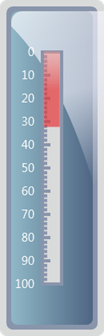

Refer to the below code to export the gauge in server side.
Step 1:
Controller:
Add the below code in your controller.
By setting the GaugeExport property to ServerSide and calling the GenerateGaugeImage() function, you can export the gauge in server side . Here you are setting the ImageFormat as “Gif” and filename as “Gauge”.
|
public ActionResult Index() { LinearGaugeModel model = new LinearGaugeModel(); model.GaugeSkins = GaugeSkins.VS2010; model.Height = 420; model.Width = 130; model.Orientation = GaugeOrientation.Vertical;
//Sets for server side export. model.GaugeExport = GaugeExport.ServerSide;
LinearScale l_Scale = new LinearScale();
l_Scale.BackgroundBrush = Brushes.White; l_Scale.ScaleBarSize = 24; l_Scale.ScaleBarLength = 290; l_Scale.BorderWidth = 4;
GaugeLabelTick c_LabelTick = new GaugeLabelTick(); c_LabelTick.FontSize = 15;
TickMark _minor = new TickMark(); _minor.TickStyle = TickStyle.MinorTick; _minor.TickWidth = 4; _minor.TickHeight = 6; _minor.DistanceFromScale = -24; _minor.TickPlacement = ScalePlacement.Outside;
TickMark _major = new TickMark(); _major.TickStyle = TickStyle.MajorTick; _major.TickWidth = 4; _major.TickHeight = 10; _major.DistanceFromScale = -24; _major.TickPlacement = ScalePlacement.Outside;
LinearBarPointer b_Pointer = new LinearBarPointer(); b_Pointer.Value = 32; b_Pointer.Opacity = 0.7; b_Pointer.PointerWidth = 18;
l_Scale.Ticks.Add(_minor); l_Scale.Ticks.Add(_major); l_Scale.Pointers.Add(b_Pointer); l_Scale.Labels.Add(c_LabelTick); model.Scales.Add(l_Scale);
//Function to generate the gauge in server or client side in Gif format. model.GenerateGaugeImage(model, "Gauge", ImageFormat.Gif);
ViewData["GaugeModel"] = model; return View(); } |
Step 2:
View:
Add the below code in view page.
|
View[ASPX] <%--Rendering the linear gauge--%>
<%=Html.Syncfusion().LinearGauge("Gauge", (LinearGaugeModel)ViewData["GaugeModel"])%> |
|
View[cshtml] @*--Rendering the linear gauge--*@
@Html.Syncfusion().LinearGauge("Gauge", (LinearGaugeModel)ViewData["GaugeModel"])
|
Step 3:
Run the code. You will get the below output. Then check the server map path location to get the exported Gauge.

Figure 119: Exporting